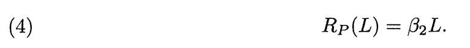
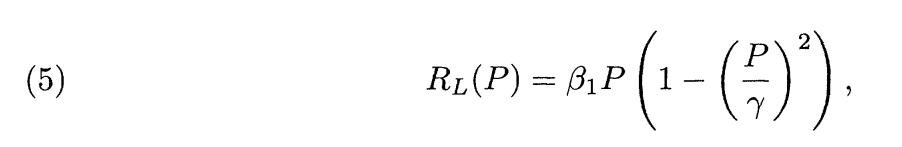

A model of Laura and Petrarch
A model of Laura and Petrarch. The emotions of Laura and Petrarch are now modeled by means of three ordinary differential equations. Laura is described by a single variable L(t), representing her love for the poet at time t. Positive and high values of L mean warm friendship, while negative values should be associated with coldness and antagonism. The personality of Petrarch is more complex; its description requires two variables: P(t), love for Laura, and Z(t), poetic inspiration. High values of P indicate ecstatic love, while negative values stand for despair.
The model is the following:
where RL(.) and RP(.) are reaction functions specified below, AP [AL] is the appeal (physical, as well as social and intellectual) of Petrarch [Laura], and all greek letters are positive constant parameters (this means that variations in the personalities of Laura and Petrarch due to aging or other external factors are not considered).
The rate of change of the love of Laura (eq. (1)) is the sum of three terms. The first, negative for positive L, describes the forgetting process characterizing individual. The second, namely RL (P), is the reaction of Laura to the love of Petrarch, while the third is her response to his appeal. Equation (2) is similar to (1) with one relevant exception: the response of Petrarch to the appeal of Laura depends also upon his inspiration Z. This takes into account the well-established fact that high moral tensions, like those associated with artistic inspiration, attenuate the role of the most basic instincts. And there is no doubt that the tensions between Petrarch and Laura are of a passionate nature. For example, in sestina XXII, he says
Con lei foss'io da che si parte il sole,
et non ci vedess' altri che le stelle,
sol una- nocte, et mai non fosse l'alba;
[Would I were with her when first sets the sun,
and no one else could see us but the stars,
one night alone, and it were never dawn;]
while in his Posteritati he confesses (in Latin): "Libidem me prorsus expertem dicere posse optarem quidem, sed si dicat mentiar" [I would truly like to say absolutely that I was without libidinousness, but if I said so I would be lying]. Finally, (3) simply says that the love of Petrarch sustains his inspiration which, otherwise, would exponentially decay with a time constant 1/α3. In other words, poetic inspiration is an exponentially weighted integral of the passion of the poet for his mistress.
The two reaction functions RL(P) and RP(L) must now be specified. Since most individuals love to be loved and hate to be hated, the most simplistic choice (see [1]) would be to assume that the reaction functions are linear. The linearity of RP(L) is undoubtedly acceptable (at least for L < 0) since in his poems the poet has very intense reactions to the most relevant signs of antagonism from Laura. Thus, we assume
It is to be noted that the use of the proportionality coefficient 32, already employed in (2) to specify the response of Petrarch to the appeal of Laura, is always possible by measuring AL in suitable units.
On the other hand, a linear reaction function is not appropriate for Laura. In fact, only close to the origin can RL(P) be assumed to be linear, thus interpreting the natural inclination of a beautiful high-society lady to stimulate harmless flirtations. But Laura never goes too far beyond gestures of pure courtesy: she smiles and glances. However, when Petrarch becomes more demanding and puts pressure on her, even indirectly when his poems are sung in public, she reacts very promptly and rebuffs him, as described explicitly in a number of poems, like sonnet XXI:
Mille fiate, o dolce mia guerrera,
per aver co' begli occhi vostri pace
v' aggio proferto il cor; ma voi non piace
mirar si basso colla mente altera.
[A thousand times, o my sweet enemy,
to come to terms with your enchanting eyes
I've offered you my heart, yet you despise
aiming so low with mind both proud and free.]
This suggests the use of a reaction function RL(P) which, for P > 0, first increases and then decreases. But the behavior of Laura is also nonlinear for negative values of P. In fact, when P << 0, i.e., when the poet despairs, Laura feels very sorry for him. Following her genuine Catholic ethic she arrives at the point of overcoming her antagonism by strong feelings of pity, thus reversing her reaction to the passion of the poet. This behavioral characteristic of Laura is repeatedly described in the Canzoniere. For example, in sonnet LXIII the poet says
Volgendo gli occhi al mio novo colore
che fa di morte rimembrar la gente,
pieta vi mosse; onde, benignamente
salutando, teneste in vita il core.
[Casting your eyes upon my pallor new,
which thoughts of death recalls to all mankind,
pity in you I've stirred; whence, by your kind
greetings, my heart to life's kept true.]
The above is equivalent to saying that the function RL(P), besides having a positive maximum for P > 0, has a negative minimum for P < 0.
In the following, Laura's reaction function RL(P) is assumed to be a cubic function, i.e.,
where β1 in this equation is justified as β2 in (4). Thus, for P = ϒ flattery compensastes for antagonism (so that RL (ϒ) = 0), while for P = -ϒ antagonism is compensated for by pity. Moreover, the value of P for which the reaction is maximum [minimum] is ϒ/√3 [-,ϒ/√3]. Obviously, in no way can one support, from the Canzoniere and its related historical information, the specific choice (5) for Laura's reaction function. It is better to confess that this choice is due to convenience, since it allows one to derive analytically a number of interesting results. Nevertheless, these results are robust, in the sense that they also hold for other reaction functions, obtained from (5) through reasonable perturbations. This point will be discussed later.
In conclusion, if one takes into account (4), (5), the Laura and Petrarch model (1)-(3) becomes

This is the model to be discussed in what follows. It is important to notice that this model encapsulates the personalities of Laura and Petrarch as they emerge from all the poems of the Canzonriere, and not from the particular 23 poems analyzed by Jones. Thus, the model and the conclusions one can draw from it are "independent" from those (see Fig. 1) obtained empirically by Jones.
References
- S. H. STROGATZ, Love affairs and differential equations, Math. Magazine, 61 (1988), p. 35.
- M. J. RADZICKI, Dyadic processes, tempestuous relationships, and system dynamics, System Dynamics Review, 9 (1993), pp. 79-94.
- S. H. STROGATZ, Nonlinear Dynamics and Chaos with Applications to Physics, Biology, Chem- istry and Engineering, Addison-Wesley, Reading, MA, 1994.
- F. J. JONES, The Structure of Petrarch's Canzoniere, Brewer, Cambridge, UK, 1995.
- A. I. KHIBNIK, Y. A. KUZNETSOV, V. V. LEVITIN, AND E. V. NIKOLAEV, Continuation tech- niques and interactive software for bifurcation analysis of ODEs and iterated maps, Phys. D, 62 (1993), pp. 360-371.
- F. HOPPENSTEADT, Asymptotic stability in singular perturbation problems, J. Differential Equa- tions, 15 (1974), pp. 510-521
- R. E. O'MALLEY, JR., Introduction to Singular Perturbations, Academic Press, New York, 1974
- A. N. TIKHONOV, Systems of differential equations containing small parameters at derivatives, Mat. Sb., 31 (1952), pp. 575-586 (in Russian).
- L. C. PONIRYAGIN, Asymptotic behavior of solutions of systems of differential e a small parameter at higher derivatives, Izv. Akad. Nauk. SSSR Ser. Math., 21 (1957), pp. 605-626 (in Russian).
- S. MURATORI AND S. RINALDI, Remarks on competitive coexistence, SIAM J. Appl. Math., 49 (1989), pp. 1462-1472
- S. MURATORI AND S. RINALDI, A separation condition for the existence of limit cycles in slow- fast systems, Appl. Math. Modelling, 15 (1991), pp. 312-318.
- D. LUDWIG, D. D. JONES, AND C. S. HOLLING, Qualitaive analysis of insect outbreak systems: The spruce budworm and forest, J. Anim. Ecol., 47 (1978), pp. 315-332.
- S. MURATORI AND S. RINALDI, Low- and high-frequency oscillations in three-dimensional food chain systems, SIAM J. Appl. Math., 52 (1992), pp. 1688-1706.
- S. RINALDI AND S. MURATORI, Limit cycles in slow-fast forest-pest models, Theor. Popul. Biol., 41 (1992), pp. 26-43.
To understand more about nonlinear systems you can consult the following books
| Books | Authors | ||
|---|---|---|---|
| Nonlinear Dynamics and Chaos | Steven Strogatz | ||
| The Physics of Phase Space | Young S Kim | Woodford W Zachary | |
| Chaos, Complexity and Leadership 2020 | Şefika Şule Erçetin | Şuay Nilhan Açıkalın | Emir Vajzovic |
| Dynamics with Chaos and Fractals | Marat Akhmet | Mehmet Onur Fen | Ejaily Milad Alejaily |